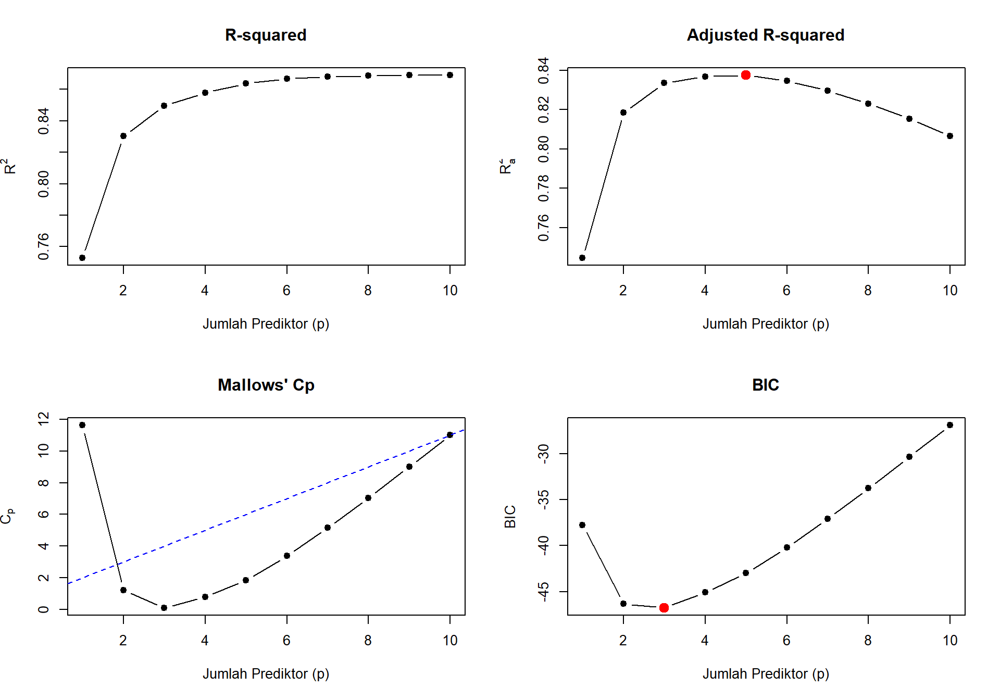

library(tidyverse)
library(MASS)
library(leaps)
library(olsrr)(Pertemuan 6) Variable Selection dalam Regresi Berganda
Stepwise Regression dan All-Possible-Regressions Selection
Kembali ke Model Linier
Pendahuluan
Sampai sekarang kita sudah belajar membangun model (praktikum 4) dan memvalidasinya (praktikum 5). Tapi muncul masalah baru: kalau kita punya banyak kandidat prediktor, misalnya 10 atau 20 variabel, gimana cara memilih kombinasi prediktor terbaik?
Kalau ada \(k\) kandidat prediktor, total ada \(2^k - 1\) kemungkinan model. Untuk \(k = 10\), itu 1023 model. Untuk \(k = 20\), itu sudah lebih dari satu juta. Kita butuh cara yang lebih sistematis daripada coba satu per satu.
Inilah yang dipelajari di praktikum ini: variable screening methods, yaitu prosedur objektif untuk menentukan variabel mana yang paling penting dari daftar kandidat yang panjang (Mendenhall et al., 2011, Sec. 6.1).
Ada dua pendekatan utama:
- Stepwise regression: tambah atau buang variabel satu per satu berdasarkan signifikansi statistik.
- All-possible-regressions selection: fit semua kemungkinan model lalu pilih yang terbaik berdasarkan kriteria seperti \(R^2_a\), \(C_p\), atau PRESS.
Package yang Dipakai
tidyverse: untuk wrangling dan visualisasi data.MASS: berisi fungsistepAIC()untuk stepwise regression berdasarkan AIC.leaps: untuk all-possible-regressions selection. Fungsi utamanyaregsubsets()yang otomatis fit semua kemungkinan subset dan menghitung kriteria evaluasi.olsrr: alternatif yang punya output lebih ramah, dengan tabel ringkas dan plot otomatis. Fungsi penting:ols_step_both_p(),ols_step_all_possible(), danols_step_best_subset().
Data
Kita pakai dataset mtcars, tapi kali ini dengan banyak prediktor sekaligus supaya proses seleksi terlihat. Responnya tetap mpg.
data(mtcars)
df <- mtcars
df$am <- factor(df$am, levels = c(0, 1), labels = c("Automatic", "Manual"))
df$vs <- factor(df$vs, levels = c(0, 1), labels = c("V-shape", "Straight"))
str(df)'data.frame': 32 obs. of 11 variables:
$ mpg : num 21 21 22.8 21.4 18.7 18.1 14.3 24.4 22.8 19.2 ...
$ cyl : num 6 6 4 6 8 6 8 4 4 6 ...
$ disp: num 160 160 108 258 360 ...
$ hp : num 110 110 93 110 175 105 245 62 95 123 ...
$ drat: num 3.9 3.9 3.85 3.08 3.15 2.76 3.21 3.69 3.92 3.92 ...
$ wt : num 2.62 2.88 2.32 3.21 3.44 ...
$ qsec: num 16.5 17 18.6 19.4 17 ...
$ vs : Factor w/ 2 levels "V-shape","Straight": 1 1 2 2 1 2 1 2 2 2 ...
$ am : Factor w/ 2 levels "Automatic","Manual": 2 2 2 1 1 1 1 1 1 1 ...
$ gear: num 4 4 4 3 3 3 3 4 4 4 ...
$ carb: num 4 4 1 1 2 1 4 2 2 4 ...Kandidat prediktor: cyl, disp, hp, drat, wt, qsec, vs, am, gear, carb. Total 10 prediktor.
Stepwise Regression
Ide dasarnya: bangun model secara bertahap, tambah atau buang variabel berdasarkan kontribusinya. Ada tiga varian (Mendenhall et al., 2011, Sec. 6.2):
- Forward selection: mulai dari model kosong (cuma intercept), tambah satu variabel paling signifikan di tiap langkah.
- Backward elimination: mulai dari model lengkap (semua prediktor), buang satu variabel paling tidak signifikan di tiap langkah.
- Stepwise (both): gabungan keduanya, di tiap langkah bisa menambah atau membuang variabel.
Kriteria yang biasa dipakai untuk memutuskan tambah/buang:
- AIC (Akaike Information Criterion): makin kecil makin baik.
- BIC (Bayesian Information Criterion): mirip AIC tapi memberi penalti lebih besar untuk model kompleks.
- p-value dari t-test koefisien (dengan ambang misalnya 0.15 seperti di Mendenhall).
Bangun Model Awal
model_full <- lm(mpg ~ cyl + disp + hp + drat + wt + qsec + vs + am + gear + carb,
data = df)
model_null <- lm(mpg ~ 1, data = df)model_full berisi semua prediktor, model_null cuma intercept.
1. Backward Elimination
Mulai dari model lengkap, buang variabel paling tidak signifikan satu per satu sampai semua sisanya signifikan:
model_backward <- stepAIC(model_full, direction = "backward", trace = FALSE)
summary(model_backward)
Call:
lm(formula = mpg ~ wt + qsec + am, data = df)
Residuals:
Min 1Q Median 3Q Max
-3.4811 -1.5555 -0.7257 1.4110 4.6610
Coefficients:
Estimate Std. Error t value Pr(>|t|)
(Intercept) 9.6178 6.9596 1.382 0.177915
wt -3.9165 0.7112 -5.507 6.95e-06 ***
qsec 1.2259 0.2887 4.247 0.000216 ***
amManual 2.9358 1.4109 2.081 0.046716 *
---
Signif. codes: 0 '***' 0.001 '**' 0.01 '*' 0.05 '.' 0.1 ' ' 1
Residual standard error: 2.459 on 28 degrees of freedom
Multiple R-squared: 0.8497, Adjusted R-squared: 0.8336
F-statistic: 52.75 on 3 and 28 DF, p-value: 1.21e-11Argumen trace = FALSE mematikan output langkah per langkah supaya rapi. Kalau mau lihat prosesnya, ganti jadi trace = TRUE.
2. Forward Selection
Mulai dari model kosong, tambah variabel paling signifikan satu per satu. Argumen scope perlu eksplisit karena R tidak tahu kandidat prediktor yang tersedia kalau modelnya kosong:
model_forward <- stepAIC(model_null,
scope = list(lower = model_null, upper = model_full),
direction = "forward", trace = FALSE)
summary(model_forward)
Call:
lm(formula = mpg ~ wt + cyl + hp, data = df)
Residuals:
Min 1Q Median 3Q Max
-3.9290 -1.5598 -0.5311 1.1850 5.8986
Coefficients:
Estimate Std. Error t value Pr(>|t|)
(Intercept) 38.75179 1.78686 21.687 < 2e-16 ***
wt -3.16697 0.74058 -4.276 0.000199 ***
cyl -0.94162 0.55092 -1.709 0.098480 .
hp -0.01804 0.01188 -1.519 0.140015
---
Signif. codes: 0 '***' 0.001 '**' 0.01 '*' 0.05 '.' 0.1 ' ' 1
Residual standard error: 2.512 on 28 degrees of freedom
Multiple R-squared: 0.8431, Adjusted R-squared: 0.8263
F-statistic: 50.17 on 3 and 28 DF, p-value: 2.184e-113. Stepwise (Both Directions)
Gabungan, mulai dari model kosong tapi bisa menambah atau membuang variabel di tiap langkah:
model_stepwise <- stepAIC(model_null,
scope = list(lower = model_null, upper = model_full),
direction = "both", trace = FALSE)
summary(model_stepwise)
Call:
lm(formula = mpg ~ wt + cyl + hp, data = df)
Residuals:
Min 1Q Median 3Q Max
-3.9290 -1.5598 -0.5311 1.1850 5.8986
Coefficients:
Estimate Std. Error t value Pr(>|t|)
(Intercept) 38.75179 1.78686 21.687 < 2e-16 ***
wt -3.16697 0.74058 -4.276 0.000199 ***
cyl -0.94162 0.55092 -1.709 0.098480 .
hp -0.01804 0.01188 -1.519 0.140015
---
Signif. codes: 0 '***' 0.001 '**' 0.01 '*' 0.05 '.' 0.1 ' ' 1
Residual standard error: 2.512 on 28 degrees of freedom
Multiple R-squared: 0.8431, Adjusted R-squared: 0.8263
F-statistic: 50.17 on 3 and 28 DF, p-value: 2.184e-11Bandingkan Hasil
hasil_stepwise <- data.frame(
Metode = c("Backward", "Forward", "Stepwise"),
Variabel = c(paste(names(coef(model_backward))[-1], collapse = ", "),
paste(names(coef(model_forward))[-1], collapse = ", "),
paste(names(coef(model_stepwise))[-1], collapse = ", ")),
AIC = c(AIC(model_backward), AIC(model_forward), AIC(model_stepwise)),
R2_adj = c(summary(model_backward)$adj.r.squared,
summary(model_forward)$adj.r.squared,
summary(model_stepwise)$adj.r.squared)
)
knitr::kable(hasil_stepwise, digits = 4)| Metode | Variabel | AIC | R2_adj |
|---|---|---|---|
| Backward | wt, qsec, amManual | 154.1194 | 0.8336 |
| Forward | wt, cyl, hp | 155.4766 | 0.8263 |
| Stepwise | wt, cyl, hp | 155.4766 | 0.8263 |
Cara baca:
- Kalau ketiga metode menghasilkan variabel yang sama, kita lebih percaya pada hasilnya.
- Kalau berbeda, perlu pertimbangan tambahan, misalnya cek dengan all-possible-regressions atau pengetahuan domain.
All-Possible-Regressions Selection
Pendekatan ini lebih komprehensif: fit semua \(2^k - 1\) kemungkinan subset model, lalu pilih yang terbaik berdasarkan kriteria yang kita pilih. Untuk \(k = 10\) prediktor, ada 1023 kemungkinan, masih bisa dihitung dalam hitungan detik (Mendenhall et al., 2011, Sec. 6.3).
Empat Kriteria Utama
1. \(R^2\)
\[R^2 = 1 - \frac{SSE}{SS(Total)}\]
Selalu naik kalau prediktor ditambah, jadi tidak bisa langsung dipakai untuk memilih. Yang dicari: titik di mana \(R^2\) mulai mendatar.
2. Adjusted \(R^2\) (\(R^2_a\))
\[R^2_a = 1 - \frac{(n-1) \cdot MSE}{SS(Total)}\]
Versi \(R^2\) yang sudah memberi penalti untuk jumlah parameter. Pilih model dengan \(R^2_a\) paling tinggi.
3. Mallows’ \(C_p\)
\[C_p = \frac{SSE_p}{MSE_k} + 2(p+1) - n\]
di mana \(p\) adalah jumlah prediktor di subset model, dan \(MSE_k\) adalah MSE model lengkap. Kriteria ini menggabungkan dua tujuan: (1) total mean square error kecil, dan (2) bias kecil. Pilih model dengan \(C_p\) kecil dan dekat dengan \(p + 1\).
4. PRESS (Prediction Sum of Squares)
\[PRESS = \sum_{i=1}^{n} (y_i - \hat{y}_{(i)})^2\]
Sudah dibahas di praktikum 5. Pilih model dengan PRESS paling kecil.
Implementasi dengan regsubsets()
Fungsi regsubsets() dari package leaps otomatis mencari subset terbaik untuk tiap ukuran \(p\):
hasil_all <- regsubsets(mpg ~ cyl + disp + hp + drat + wt + qsec + vs + am + gear + carb,
data = df,
nvmax = 10,
method = "exhaustive")
ringkasan_all <- summary(hasil_all)
ringkasan_allSubset selection object
Call: regsubsets.formula(mpg ~ cyl + disp + hp + drat + wt + qsec +
vs + am + gear + carb, data = df, nvmax = 10, method = "exhaustive")
10 Variables (and intercept)
Forced in Forced out
cyl FALSE FALSE
disp FALSE FALSE
hp FALSE FALSE
drat FALSE FALSE
wt FALSE FALSE
qsec FALSE FALSE
vsStraight FALSE FALSE
amManual FALSE FALSE
gear FALSE FALSE
carb FALSE FALSE
1 subsets of each size up to 10
Selection Algorithm: exhaustive
cyl disp hp drat wt qsec vsStraight amManual gear carb
1 ( 1 ) " " " " " " " " "*" " " " " " " " " " "
2 ( 1 ) "*" " " " " " " "*" " " " " " " " " " "
3 ( 1 ) " " " " " " " " "*" "*" " " "*" " " " "
4 ( 1 ) " " " " "*" " " "*" "*" " " "*" " " " "
5 ( 1 ) " " "*" "*" " " "*" "*" " " "*" " " " "
6 ( 1 ) " " "*" "*" "*" "*" "*" " " "*" " " " "
7 ( 1 ) " " "*" "*" "*" "*" "*" " " "*" "*" " "
8 ( 1 ) " " "*" "*" "*" "*" "*" " " "*" "*" "*"
9 ( 1 ) " " "*" "*" "*" "*" "*" "*" "*" "*" "*"
10 ( 1 ) "*" "*" "*" "*" "*" "*" "*" "*" "*" "*" Tabel di atas menunjukkan, untuk tiap ukuran model (1 sampai 10 prediktor), variabel mana yang dipilih sebagai subset terbaik. Tanda bintang * artinya variabel itu masuk ke model.
Kriteria Evaluasi tiap Subset
tabel_kriteria <- data.frame(
p = 1:length(ringkasan_all$rsq),
R2 = ringkasan_all$rsq,
R2_adj = ringkasan_all$adjr2,
Cp = ringkasan_all$cp,
BIC = ringkasan_all$bic
)
knitr::kable(tabel_kriteria, digits = 4)| p | R2 | R2_adj | Cp | BIC |
|---|---|---|---|---|
| 1 | 0.7528 | 0.7446 | 11.6270 | -37.7946 |
| 2 | 0.8302 | 0.8185 | 1.2187 | -46.3482 |
| 3 | 0.8497 | 0.8336 | 0.1026 | -46.7732 |
| 4 | 0.8579 | 0.8368 | 0.7900 | -45.0995 |
| 5 | 0.8637 | 0.8375 | 1.8462 | -42.9871 |
| 6 | 0.8667 | 0.8347 | 3.3700 | -40.2266 |
| 7 | 0.8681 | 0.8296 | 5.1472 | -37.0963 |
| 8 | 0.8687 | 0.8230 | 7.0496 | -33.7786 |
| 9 | 0.8689 | 0.8153 | 9.0114 | -30.3710 |
| 10 | 0.8690 | 0.8066 | 11.0000 | -26.9226 |
Visualisasi Kriteria
Plot tiap kriteria terhadap jumlah prediktor membantu memilih ukuran model yang optimal:
par(mfrow = c(2, 2))
plot(tabel_kriteria$p, tabel_kriteria$R2,
type = "b", pch = 19,
xlab = "Jumlah Prediktor (p)", ylab = expression(R^2),
main = "R-squared")
plot(tabel_kriteria$p, tabel_kriteria$R2_adj,
type = "b", pch = 19,
xlab = "Jumlah Prediktor (p)", ylab = expression(R[a]^2),
main = "Adjusted R-squared")
points(which.max(tabel_kriteria$R2_adj),
max(tabel_kriteria$R2_adj),
col = "red", pch = 19, cex = 1.5)
plot(tabel_kriteria$p, tabel_kriteria$Cp,
type = "b", pch = 19,
xlab = "Jumlah Prediktor (p)", ylab = expression(C[p]),
main = "Mallows' Cp")
abline(a = 1, b = 1, lty = 2, col = "blue")
plot(tabel_kriteria$p, tabel_kriteria$BIC,
type = "b", pch = 19,
xlab = "Jumlah Prediktor (p)", ylab = "BIC",
main = "BIC")
points(which.min(tabel_kriteria$BIC),
min(tabel_kriteria$BIC),
col = "red", pch = 19, cex = 1.5)
Cara baca tiap plot:
- \(R^2\): cari titik di mana kurva mulai mendatar. Penambahan prediktor setelah titik itu cuma menambah sedikit \(R^2\).
- Adjusted \(R^2\): pilih nilai paling tinggi (titik merah).
- \(C_p\): cari titik dengan \(C_p\) kecil dan dekat dengan garis \(C_p = p + 1\) (garis biru putus-putus).
- BIC: pilih nilai paling kecil (titik merah).
Pilih Model Terbaik
p_terbaik_adjR2 <- which.max(ringkasan_all$adjr2)
p_terbaik_cp <- which.min(ringkasan_all$cp)
p_terbaik_bic <- which.min(ringkasan_all$bic)
cat("Model terbaik berdasarkan Adjusted R²:", p_terbaik_adjR2, "prediktor\n")Model terbaik berdasarkan Adjusted R²: 5 prediktorcat("Model terbaik berdasarkan Cp :", p_terbaik_cp, "prediktor\n")Model terbaik berdasarkan Cp : 3 prediktorcat("Model terbaik berdasarkan BIC :", p_terbaik_bic, "prediktor\n")Model terbaik berdasarkan BIC : 3 prediktorLihat variabel apa saja yang masuk ke model terbaik menurut Adjusted \(R^2\):
coef(hasil_all, p_terbaik_adjR2)(Intercept) disp hp wt qsec amManual
14.36190396 0.01123765 -0.02117055 -4.08433206 1.00689683 3.47045340 Pendekatan Alternatif: olsrr
Package olsrr menyediakan output yang lebih ringkas dan plot otomatis. Cocok kalau mau hasil cepat tanpa banyak setup:
# Stepwise regression dengan p-value
ols_step_both_p(model_full, p_enter = 0.10, p_remove = 0.15)
# Best subset selection
ols_step_best_subset(model_full)
# All possible regressions (semua kombinasi)
ols_step_all_possible(model_full)Output dari ols_step_best_subset() sudah berbentuk tabel rapi dengan semua kriteria sekaligus (\(R^2\), Adjusted \(R^2\), \(C_p\), AIC, BIC, dan lainnya).
Caveats: Hati-Hati Pakai Variable Selection
Mendenhall et al. (2011, Sec. 6.4) memberi beberapa peringatan penting yang sering diabaikan:
1. Probabilitas error tinggi. Karena prosedur ini melakukan banyak uji hipotesis sekaligus, peluang melakukan setidaknya satu Type I atau Type II error cukup tinggi. Akibatnya: model akhir bisa saja memuat variabel tidak penting, atau melewatkan variabel penting.
2. Tidak ada interaksi atau suku polinomial otomatis. Stepwise dan best subset cuma melihat efek utama (main effects). Kalau ada interaksi atau hubungan nonlinier yang penting, prosedur ini tidak akan mendeteksinya.
3. Bisa menghasilkan model yang tidak masuk akal. Misalnya model dengan suku interaksi \(x_1 x_2\) tapi tanpa \(x_1\) atau \(x_2\) secara terpisah. Secara matematis bisa, tapi sulit diinterpretasi dan melanggar prinsip hierarchical principle.
4. Bisa menghilangkan variabel penting. Variabel yang penting secara teori (misalnya gender dalam analisis bias gaji) bisa saja tidak terpilih oleh stepwise. Padahal variabel itu wajib ada untuk menjawab pertanyaan penelitian. Jangan biarkan algoritma menggantikan akal sehat.
Cara Pakai yang Benar
Variable screening sebaiknya dipakai sebagai langkah pertama dari long list, bukan sebagai metode final pemilihan model. Setelah dapat shortlist variabel penting, lanjutkan dengan model building (praktikum 4) untuk pertimbangan interaksi dan suku polinomial, lalu validasi (praktikum 5) untuk konfirmasi performa.
Referensi Sintaks
# Stepwise regression dengan AIC
library(MASS)
m_full <- lm(y ~ ., data = df)
m_null <- lm(y ~ 1, data = df)
stepAIC(m_full, direction = "backward")
stepAIC(m_null, scope = list(lower = m_null, upper = m_full),
direction = "forward")
stepAIC(m_null, scope = list(lower = m_null, upper = m_full),
direction = "both")
# Stepwise dengan BIC
n <- nrow(df)
stepAIC(m_full, direction = "backward", k = log(n))
# All-possible-regressions
library(leaps)
hasil <- regsubsets(y ~ ., data = df, nvmax = 10)
summary(hasil)$rsq # R²
summary(hasil)$adjr2 # Adjusted R²
summary(hasil)$cp # Mallows' Cp
summary(hasil)$bic # BIC
coef(hasil, id = 5) # koefisien model dengan 5 prediktor
# Pakai olsrr (output lebih ramah)
library(olsrr)
ols_step_both_p(m_full) # stepwise berdasarkan p-value
ols_step_best_subset(m_full) # best subset
ols_step_all_possible(m_full) # semua kombinasiReferensi
Mendenhall, W., Sincich, T. (2011). A Second Course in Statistics: Regression Analysis (7th ed.). Prentice Hall.
Materi modul ini mengacu pada Bab 6 buku di atas: pengantar variable screening (Sec. 6.1), stepwise regression dengan varian forward, backward, dan stepwise (Sec. 6.2), all-possible-regressions selection dengan kriteria \(R^2\), Adjusted \(R^2\), \(C_p\), dan PRESS (Sec. 6.3), serta caveats penggunaan metode-metode ini (Sec. 6.4).